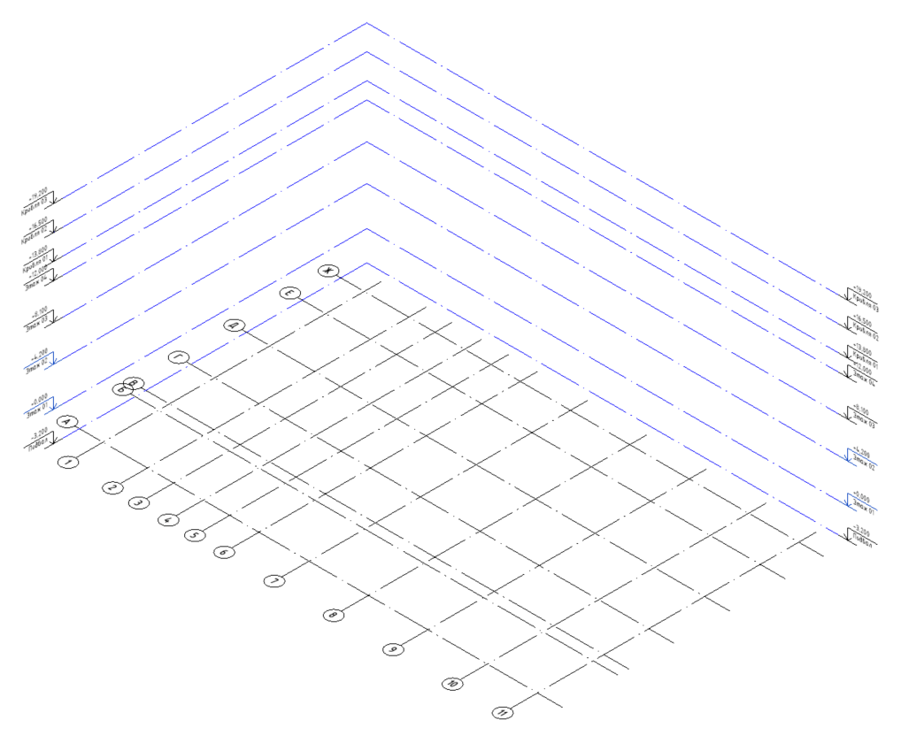
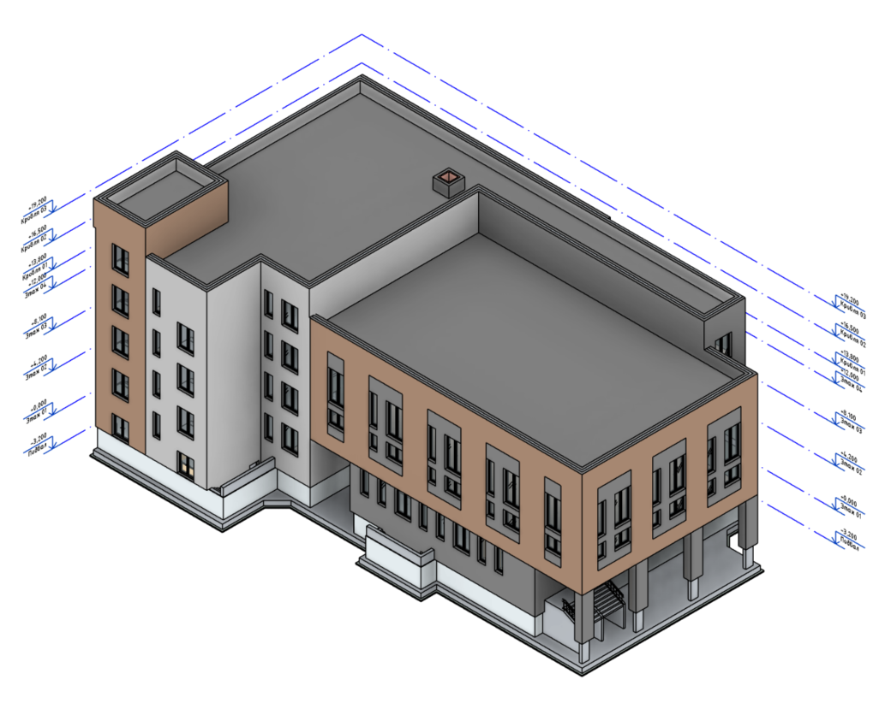
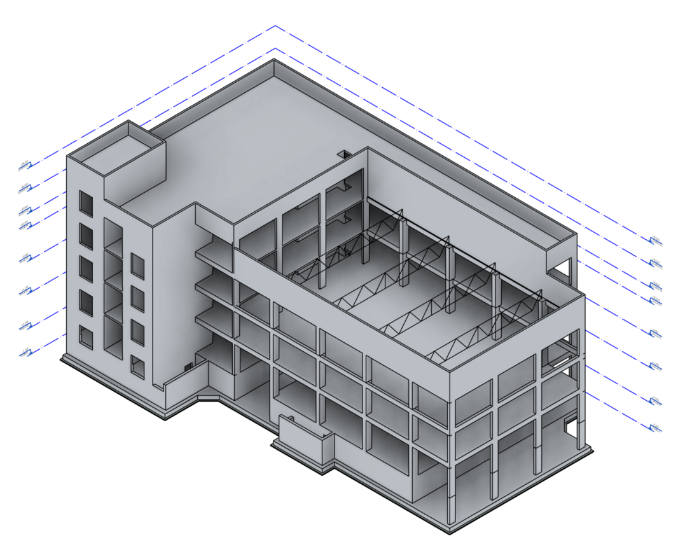

flowchart TD
B[Базовый]
R1[Разбивочный 1]
R2[...]
B -->|координаты| R1
B -->|координаты| R2
R1 -->|оси и уровни| AR[АР]
R1 -->|оси и уровни| KR[КР]
R1 -->|оси и уровни| OV[ОВ]
R1 -->|оси и уровни| VK[ВК]
R1 -->|оси и уровни| D[...]
1 Стратегии проектирования несущих конструкций в программных комплексах
Стадии проектирования
Проектирование объектов капитального строительства производственного и непроизводственного назначения проходит несколько стадий, каждая из которых имеет свои цели и задачи. В табл. 1 представлены основные стадии проектирования и соответствующие им наборы комплектов чертежей.
| Укрупненные дисциплины | Предпроектная документация | Проектная документация | Рабочая документация | Документация на изделия |
|---|---|---|---|---|
| Архитектура и генплан | АГО/АГР, АГК, ЭП | ПЗ, ПЗУ, АР | ГП, АР | – |
| Несущие конструкции | ЭП, консультирование | КР | КЖ, КМ, КД | КМД, КЖИ, НВФ, КДД |
| Инженерные системы | ЭП, консультирование | ИОС 1-6, ТР | ЭОМ, ВК, ОВиК, СС, ГС, ТХ | – |
| Специальные разделы | – | ПОС, ООС, ПБ, ОДИ, ТБЭ, СМ и др. | АС, АИ, НВК, ТС, ЭС, ИТП, УУТ, ОС, ПС, АК и др. | – |
1 Переработано по материалам ⇲ видео-лекции TrueBIM и ⇲ конспекта лекции
Предпроектная документация
Разработка предпроектной документации слабо регламентирована, поэтому в ней могут быть представлены различные варианты комплектов чертежей, в частности, в нее могут входить:
архитектурно-градостроительный облик (АГО) или архитектурно-градостроительное решение (АГР) – регламентируются региональными нормативными документами;
архитектурно-градостроительная концепция (АГК) и эскизный проект (ЭП) – инициативные документы для презентации инвесторам, расчета технико-экономических показателей.
Проектная документация
Разработка проектной документации регламентируется ⇲ Постановлением Правительства РФ № 87 (в части состава) и ⇲ ГОСТ Р 21.101-2026 (в части оформления).
В состав проектной документации для строительства объектов капитального строительства производственного и непроизводственного назначения входят:
а) раздел 1 “Пояснительная записка” (ПЗ);
б) раздел 2 “Схема планировочной организации земельного участка” (ПЗУ);
в) раздел 3 “Объемно-планировочные и архитектурные решения” (АР);
г) раздел 4 “Конструктивные решения” (КР);
д) раздел 5 “Сведения об инженерном оборудовании, о сетях и системах инженерно-технического обеспечения” (ИОС);
е) раздел 6 “Технологические решения” (ТР) (для объектов капитального строительства непроизводственного назначения разрабатывается в случае наличия требования о его разработке в задании на проектирование);
ж) раздел 7 “Проект организации строительства” (ПОС), содержащий в том числе проект организации работ по сносу объектов капитального строительства, их частей (при необходимости сноса объектов капитального строительства, их частей для строительства, реконструкции других объектов капитального строительства);
з) раздел 8 “Мероприятия по охране окружающей среды” (ООС);
и) раздел 9 “Мероприятия по обеспечению пожарной безопасности” (ПБ);
к) раздел 10 “Требования к обеспечению безопасной эксплуатации объектов капитального строительства” (ТБЭ);
л) раздел 11 “Мероприятия по обеспечению доступа инвалидов к объекту капитального строительства” (ОДИ);
м) раздел 12 “Смета на строительство, реконструкцию, капитальный ремонт, снос объекта капитального строительства” (СМ);
н) раздел 13 “Иная документация в случаях, предусмотренных законодательными и иными нормативными правовыми актами Российской Федерации”.
Согласно п. 14 Раздел 4 “Конструктивные решения” содержит:
в текстовой части:
а) сведения о топографических, инженерно-геологических, гидрогеологических, метеорологических и климатических условиях земельного участка, предоставленного для размещения объекта капитального строительства;
б) сведения об особых природных климатических условиях территории, на которой располагается земельный участок, предоставленный для размещения объекта капитального строительства;
в) сведения о прочностных и деформационных характеристиках грунта в основании объекта капитального строительства;
г) уровень грунтовых вод, их химический состав, агрессивность грунтовых вод и грунта по отношению к материалам, используемым при строительстве, реконструкции, капитальном ремонте подземной части объекта капитального строительства;
д) описание и обоснование конструктивных решений зданий и сооружений, включая их пространственные схемы, принятые при выполнении расчетов строительных конструкций;
е) описание и обоснование технических решений, обеспечивающих необходимую прочность, устойчивость, пространственную неизменяемость зданий и сооружений объекта капитального строительства в целом, а также их отдельных конструктивных элементов, узлов, деталей в процессе изготовления, перевозки, строительства, реконструкции, капитального ремонта и эксплуатации объекта капитального строительства;
ж) описание конструктивных и технических решений подземной части объекта капитального строительства;
з-к) утратили силу с 1 сентября 2022 г.
л) обоснование проектных решений и мероприятий, обеспечивающих:
- соблюдение требуемых теплозащитных характеристик ограждающих конструкций;
- снижение шума и вибраций;
- гидроизоляцию и пароизоляцию помещений;
- снижение загазованности помещений;
- удаление избытков тепла;
- соблюдение безопасного уровня электромагнитных и иных излучений;
- пожарную безопасность;
- соответствие зданий, строений и сооружений требованиям энергетической эффективности и требованиям оснащенности их приборами учета используемых энергетических ресурсов (за исключением зданий, строений, сооружений, на которые требования энергетической эффективности и требования оснащенности их приборами учета используемых энергетических ресурсов не распространяются);
м) характеристику и обоснование конструкций полов, кровли, потолков, перегородок;
н) перечень мероприятий по защите строительных конструкций и фундаментов от разрушения;
о) описание инженерных решений и сооружений, обеспечивающих защиту территории объекта капитального строительства, отдельных зданий и сооружений объекта капитального строительства, а также персонала (жителей) от опасных природных и техногенных процессов;
о1) перечень мероприятий по обеспечению соблюдения установленных требований энергетической эффективности к конструктивным решениям, влияющим на энергетическую эффективность зданий, строений и сооружений;
о2) описание и обоснование принятых конструктивных, функционально-технологических и инженерно-технических решений, направленных на повышение энергетической эффективности объекта капитального строительства, в том числе в отношении наружных и внутренних систем электроснабжения, отопления, вентиляции, кондиционирования воздуха помещений (включая обоснование оптимальности размещения отопительного оборудования, решений в отношении тепловой изоляции теплопроводов, характеристик материалов для изготовления воздуховодов), горячего водоснабжения, оборотного водоснабжения и повторного использования тепла подогретой воды;
в графической части:
п) поэтажные планы зданий и сооружений с указанием размеров и экспликации помещений;
р) чертежи разрезов зданий, строений и сооружений с изображением несущих и ограждающих конструкций, указанием размерной привязки осей или поверхностей элементов конструкций к координационным осям здания (строения, сооружения) или в необходимых случаях к другим элементам конструкций, отметок наиболее характерных уровней элементов конструкций, позиций (марок) элементов конструкций, а также с изображением линий геологических разрезов, разграничивающих слои грунта с различными геологическими характеристиками, для фундаментов и свайных оснований;
с) чертежи фрагментов планов и разрезов, требующих детального изображения;
т) схемы каркасов и узлов строительных конструкций;
у) планы перекрытий, покрытий, кровли;
ф) схемы расположения ограждающих конструкций и перегородок;
х) план и сечения фундаментов. :::
Рабочая документация
Разработка рабочей документации регламентируется ⇲ ГОСТ Р 21.101-2026 (в части оформления).
Информационная модель объекта капитального строительства
На практике информационная модель объекта капитального строительства не ведётся внутри одного файла. Разбиение выполняется так, чтобы одна модель соответствовала одному блоку/секции. Далее модель дробится по разделам: АР, КР, ОВ, ВК и другим.



Чтобы все дисциплинарные модели совпадали в пространстве, используется связка «базовый файл → разбивочный файл → дисциплинарные модели»:
- Базовый файл хранит систему координат и высот объекта.
- Разбивочный файл (один на блок/секцию) получает координаты от базового и формирует единую сетку осей и уровней.
- Дисциплинарные модели (АР, КР, ОВ, ВК и т.д.) подключаются к разбивочному файлу как связанные модели и наследуют из него оси и уровни.
Особенности разработки моделей КР и КЖ с учётом стадийности проектирования
В разработке.